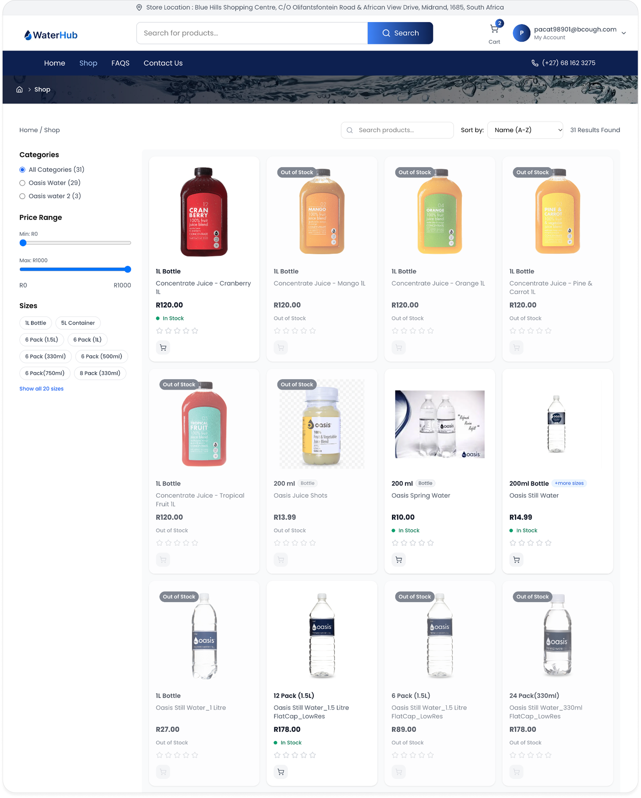
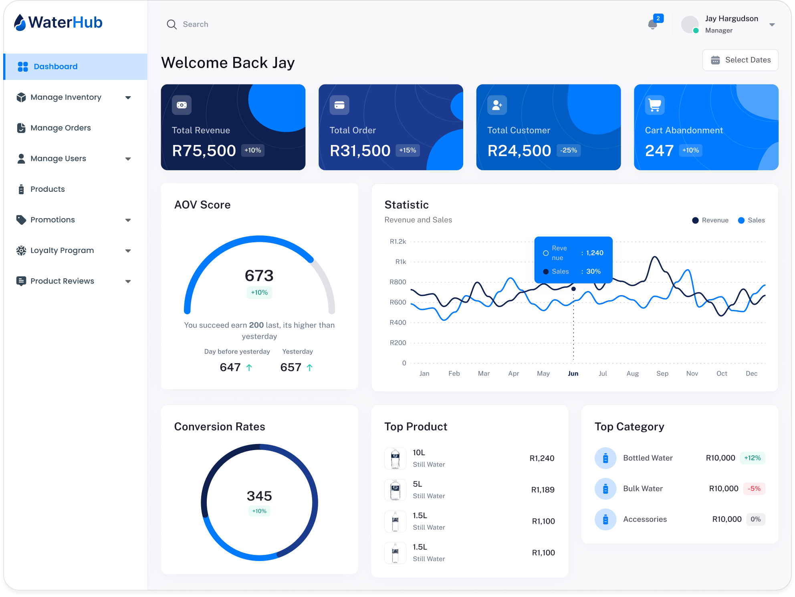
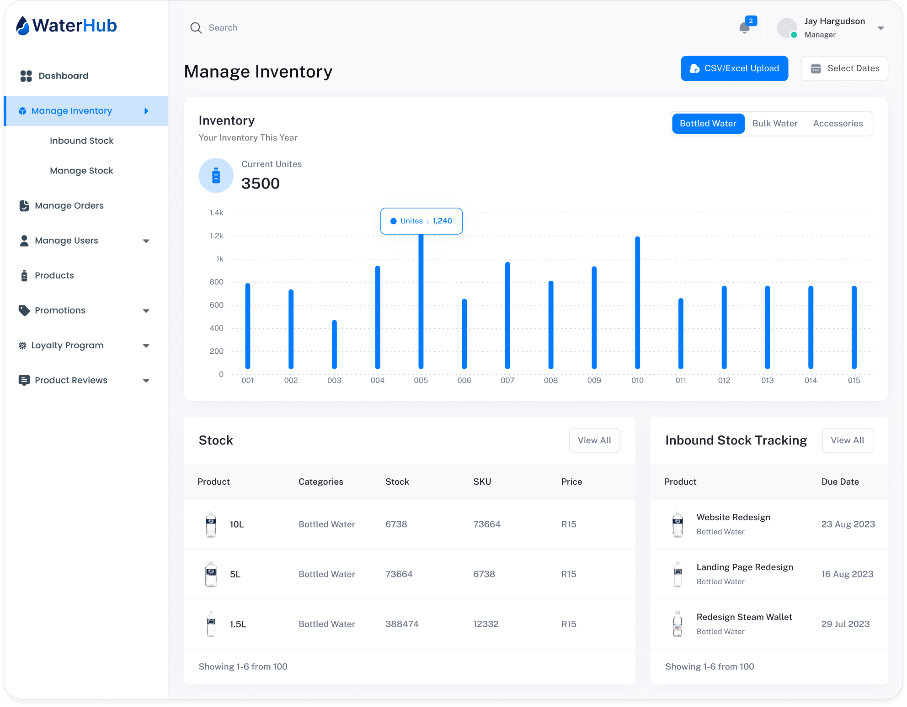
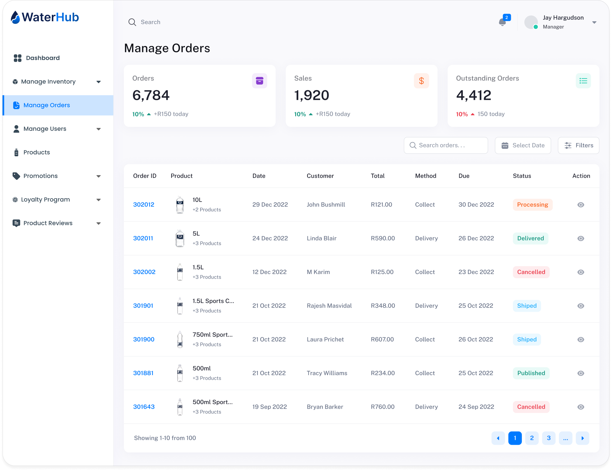
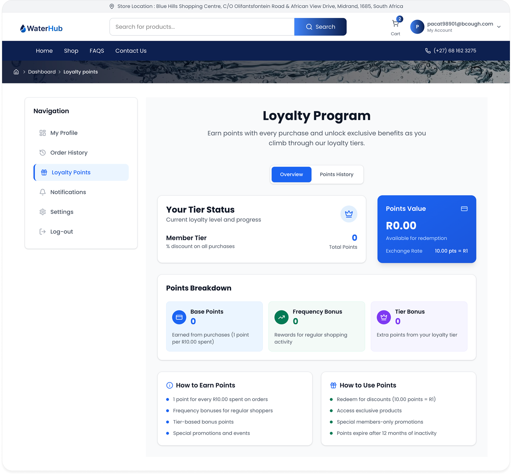
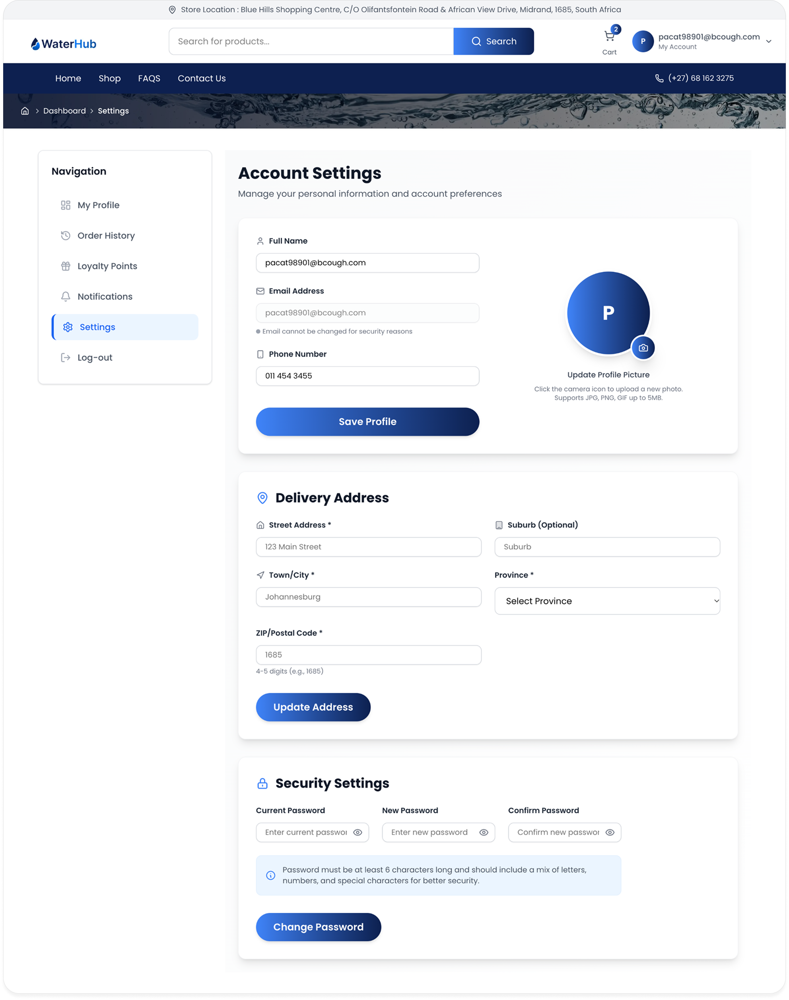

Case study
WaterHub
WaterHub is an online store for water and other products, with a dashboard for running the business behind it. Customers shop, manage their account, and track rewards. Store staff use the dashboard to monitor sales, manage inventory, and track orders.
- Product
- E-commerce and store management
- Scope
- Storefront and admin dashboard
- Platform
- Web
The design screens contain sample records and figures.
Customer storefront
Browse water and other products
The shop presents water and other products in a searchable catalogue. Customers can narrow the selection with filters, compare products and prices, and add items to their cart.


Sales dashboard
See how the store is performing
The dashboard brings revenue, orders, and customer activity into one view. Staff can compare sales over time and see which products and categories are performing well.


Inventory management
Track stock on hand and on the way
The inventory view shows stock levels by product. An inbound stock list helps staff track expected stock alongside what is already available to sell.


Order management
Follow orders from purchase to fulfilment
The order table brings together customer details, totals, payment methods, dates, and statuses. Staff can use it to see which orders are outstanding and which have been fulfilled.


Customer loyalty
Make rewards easy to understand
The loyalty area shows customers their points balance, membership tier, and how to earn or use points. It also explains the different ways they can earn rewards.


Account settings
Manage profile and delivery details
The account area lets customers update their contact information and delivery address. A separate security section provides account controls.

